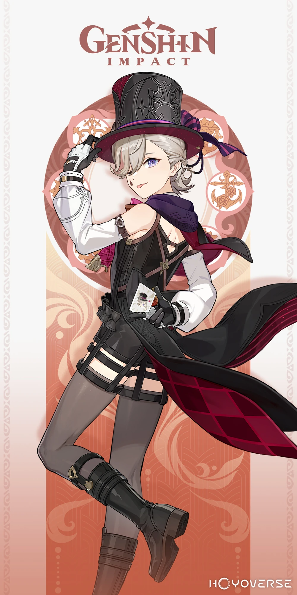
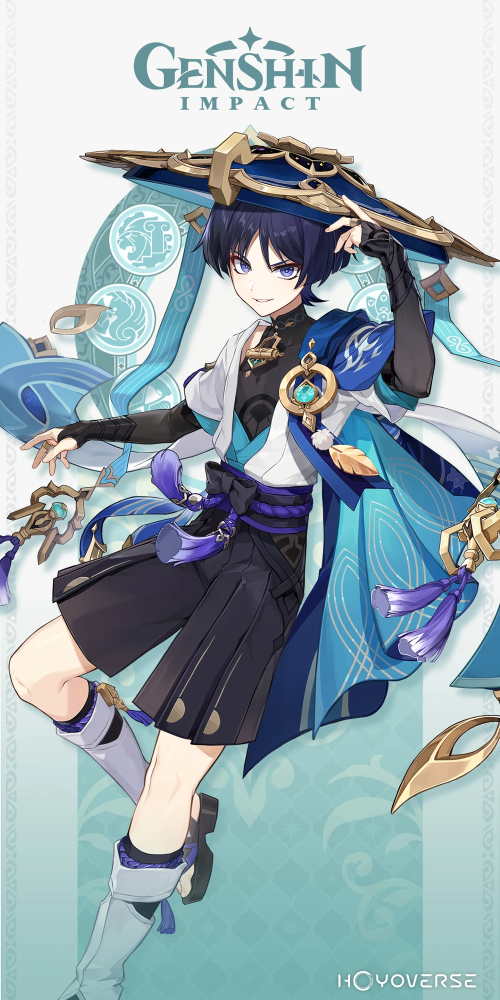

Personajes ver. 4.6
La Sota

Todo lo impuro y vil, todo lo leal y noble, puede dormir profundamente al calor de la hoguera.
Todo lo impuro y vil, todo lo leal y noble, puede dormir profundamente al calor de la hoguera.
El Mago

El deber de un mago es desafiar los límites de la imaginación.
La luz de la luna se posa sobre su palma, iluminando un universo de milagros congregados.
La luz de la luna se posa sobre su palma, iluminando un universo de milagros congregados.
El Baladista 
Busqué e indagué durante incontables noches una obsesión ilusoria.
Pero ¿qué sentido tiene seguir cruzando tantos vientos oscuros con tal melancolía y tristeza?
Pero ¿qué sentido tiene seguir cruzando tantos vientos oscuros con tal melancolía y tristeza?
Ver más
Ver más
Ver más

Copyright © COGNOSPHERE. All Rights Reserved.